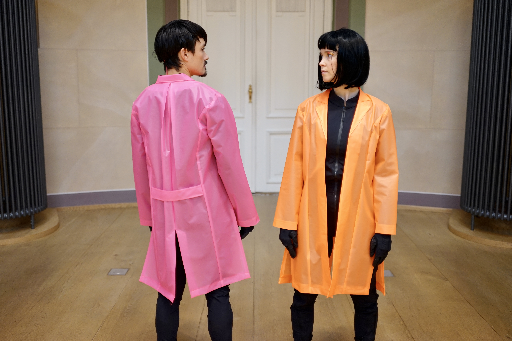

<div class="textcontainer">
<h3>About Me</h3>
<p class="margin"> </p>
<div class="center-row">
<img src="./Fav.jpg" alt="photo of Carly, a white person with blond hair" width=35%>
<p id="aboutme">
My name is Carly and I'm a current Masters in Design Studies–Mediums student at Harvard's Graduate School of Design.
Within this site you'll find documentation on my projects and work for PS70 Digital Fabrication.
</p>
</div>
<p class="margin"> </p>
I have a background in AR and VR development, motion capture technology and creative direction. I love the intersection of art and technology!
I was previously a professional dancers. Many of the projects I make use the human body as a vehicle for artistic expression.
<p class="margin"> </p>
<div class="flexrow">
</div>
<p class="caption">This is a project in the subway ads of Berlin, Germany.</p>
<h3>Bio</h3>
<p class="margin"></p>
I received me BA from Stanford University June '15. I was previously an artist-in-residence and Creative Director at gamelab.berlin, where I directed live productions and films at the intersection of dance and XR technologies.
I directed the award-winning works including PAAR (2022) that took Best VR Film at LA Film Fest in Nov ‘22 and was selected for Mammoth Film Festival March ‘23.
It showed in ten festivals globally in over five countries.
<p class="margin"> </p>
<div class="flexrow">

</div>
<p class="caption">(Dancers: Sean Nederlof, Yasmin Schonmann)</p>
<p class="margin"></p>
I was an artist- in-residence with the Goethe Institute (2020-2021) as the artistic director of the Golem-Labor, an international workshop series researching motion capture technology with dance.
I was a 2018-2019 US Fulbright Artist to Germany (affiliated with gamelab.berlin at Humboldt Universität zu Berlin, in residency with Tanzfabrik Berlin) exploring dance styles with new immersive technologies.
Through this, she directed the VR dancework Golem (2019), garnering awards for VR innovation from ADC Germany and CommAwards EU.
<p class="margin"> </p>
<p class="margin"></p>
I have been commissioned by the Maxim Gorki Theater, presented work at MutekSF, the Republica Digital Technology conference,
and given lectures on dance with technology at Lüneberg University, Cottbus Technical University and Humboldt Universität zu Berlin.
<p class="margin"></p>
I'm currently working on a final project for this class on [Week 1](./01_intro/index.html) :)
</div>